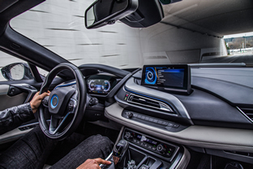
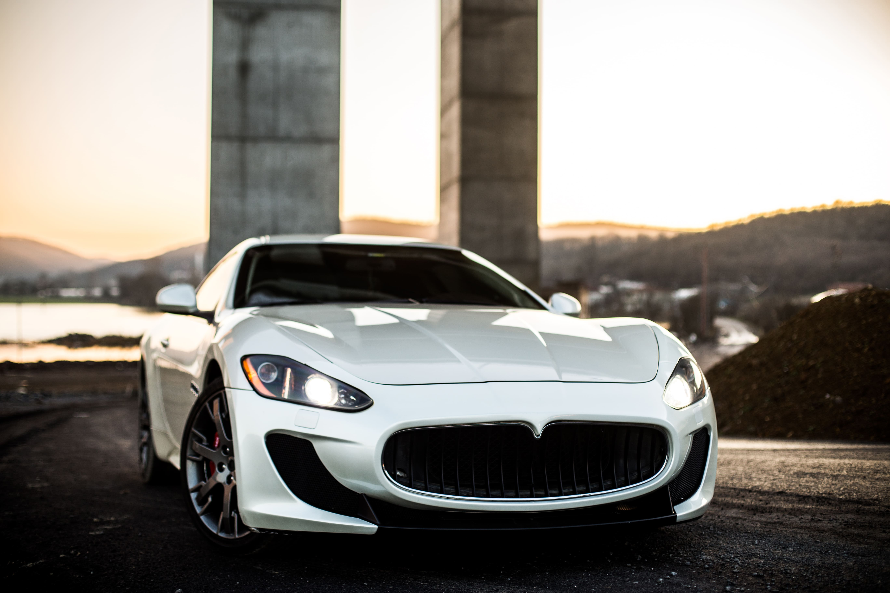

¿Estás listo para elevar tu experiencia de conducción?
Prepárese para experimentar lo último en lujo con nuestros nuevos vehículos. Con modelos SUV y sedán, este vehículo está diseñado para atraer todas las miradas en la carretera gracias a su elegante diseño y su impresionante acabado. Desde la calidad de los materiales utilizados hasta su potente motorización, cada aspecto de estos vehículos han sido cuidadosamente elaborados para proporcionar una experiencia de conducción sin igual.
Pero no se conforme con nuestra palabra: compruebe usted mismo por qué nuestros vehículos están en boca de todos. Con sus excepcionales características, se sentirá como en las nubes cada vez que se ponga al volante. Y a un precio asequible, nunca ha sido tan fácil disfrutar de las cosas buenas de la vida.
¿Por qué conformarse con menos que lo mejor? Actualice su vehículo hoy mismo y experimente el verdadero lujo con nuestros vehículos de gama alta.
Un interior de lujo
Panel de instrumentos
Un salpicadero innovador que incluye una variedad de características que mejoran la experiencia del conductor y la seguridad en la carretera. Incluye una pantalla de visualización de información grande y de alta resolución que puede mostrar información relevante para el conductor, como la velocidad, la navegación, el clima y los datos del vehículo. Sus controles táctiles, en lugar de botones físicos, que permitan al conductor interactuar con el vehículo de manera más intuitiva.
Controles adicionales
Instrumentos que no acaban en el salpicadero. Controles e instrumentos en la zona de la palanca de cambios de alta calidad diseñados para proporcionar una experiencia de lujo al conductor y pasajeros. El cuero es uno de los materiales más utilizados en este vehículo, de gran suavidad y durabilidad.

Asientos

Asientos cómodos, elegantes y diseñados con materiales de alta calidad. Los asientos están debidamente acolchados y son ajustables para proporcionar el máximo confort al conductor y a los pasajeros. Utilizamos cuero de alta calidad, duraderos y suaves al tacto. Al mismo tiempo, son asientos funcionales y prácticos. Están equipados con calefacción y refrigeración para adaptarse a diferentes climas y mantener a los pasajeros cómodos en todo momento.
Confort
El confort de los pasajeros es lo más importante para nuestra marca. Para lograr un alto nivel de confort, se utilizan materiales de alta calidad y se prestan atención a los detalles de diseño y la funcionalidad de los elementos. Incluye sistemas de entretenimiento y sonido de alta calidad, iluminación ambiental ajustable, amplio espacio para las piernas y la cabeza de los pasajeros.

Imágenes extraidas de Freepik
Características de nuestros modelos
Modelo
- SUV
- Berlina
- Eléctrico
Motor
- 2.5 CV
- 1.8 CV
- 150 kV
Todoterreno
- Sí
- No
- No
Precio
- 38.000 €
- 35.000 €
- 43.000 €
Galería



Imágenes extraidas de Freepik